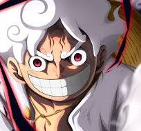

مونكي دي لوفي هو الشخصية الرئيسية في سلسلة الأنمي والمانجا "ون بيس". يُعرف أيضًا باسم "قبعة القش" نظرًا لارتدائه قبعة قشية مميزة. لوفي هو مؤسس وقائد "قراصنة قبعة القش". حلمه الأكبر هو أن يصبح "ملك القراصنة" من خلال إيجاد أعظم كنوز العالم المعروف باسم "الون بيس". لوفي أكل فاكهة الشيطان "جومو جومو" التي منحته قدرات مطاطية خارقة ولكن جعلته غير قادر على السباحة. تتميز شخصيته بالشجاعة والطموح الكبيرين، مما يجعله أحد أقوى المقاتلين في عالم "ون بيس" [2].
